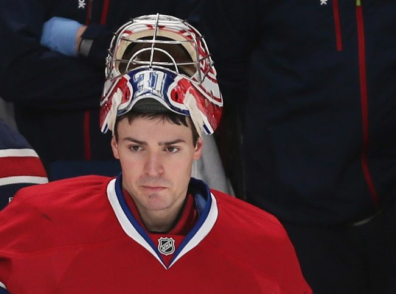

Carey Price is an NHL Goalie that plays for the Montreal Canadiens. He was born on August 16, 1987 in Vancouver, BC. Carey Price was drafted 5th overall in the 2005 Nhl draft, after two seasons with the Tri City Americans in the WHL. Price played two more seasons with the Tri City Americans before being put on the Canadiens farm club, the Hamilton Bulldogs of the AHL. He started with them in the playoffs and lead them to a Calder cup championship that year. He then became the backup goaltender for the Canadiens in the 2007-2008 season and became the number one goalie later that year. In 2014, Price played for the Canadian olympic team and lead them to a championship. He was voted the best goalie of the tournament, with a 0.971 save percentage and a 0.59 goals against average.
